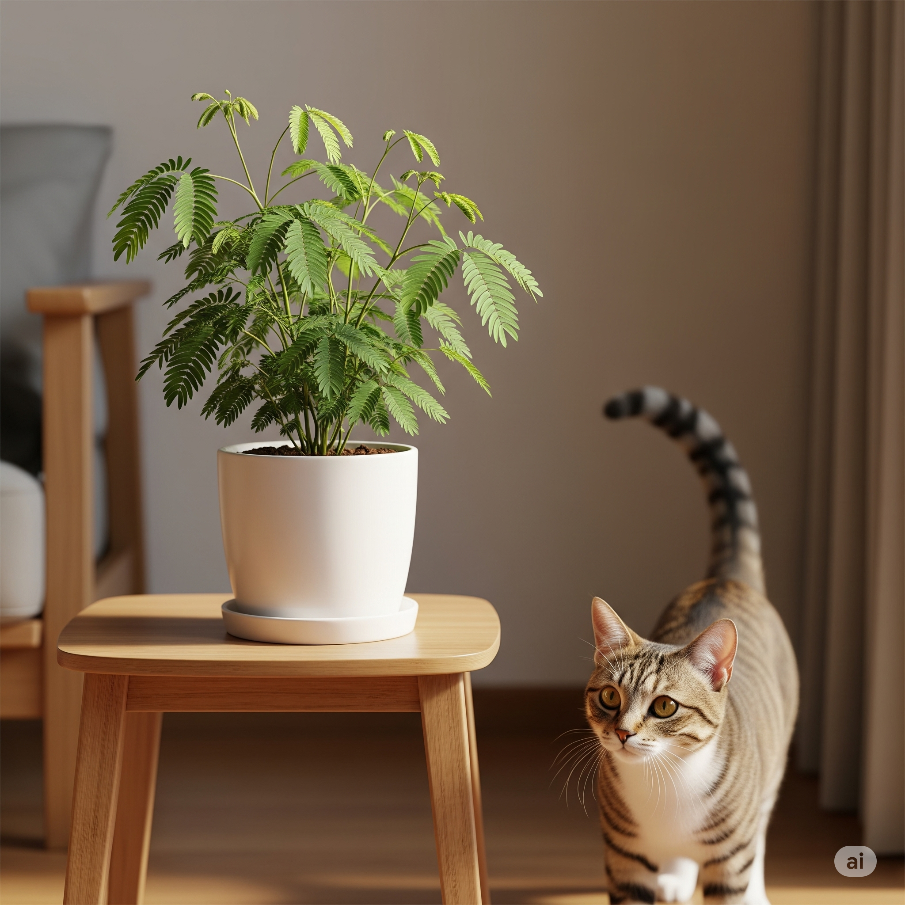

Dormideira: como cuidar da planta que “dorme” com o toque?

A dormideira, também conhecida como sensitiva (Mimosa pudica), é uma planta encantadora que reage ao menor toque: suas folhas se fecham como se estivesse “dormindo”. Mas por trás desse espetáculo sensorial existe uma planta que exige cuidados específicos — especialmente se há gatos em casa.

Outros nomes e curiosidades
A dormideira também é conhecida por diversos apelidos populares: sensitiva, dorme-dorme, não-me-toques, maria-fecha-a-porta — todos fazendo alusão ao seu comportamento curioso de fechar as folhas ao menor toque.
Trata-se de um pequeno arbusto perene, originário da América Tropical, pertencente à família das Fabaceae (a mesma das ervilhas, feijões e outras leguminosas). Pode ser cultivada em vasos e aprecia ambientes de meia-sombra, com rega diária para manter o solo úmido — mas sem encharcar.
Suas folhas também se fecham naturalmente à noite, e o mecanismo de defesa contra toques ou calor é uma estratégia natural para afastar predadores e insetos.
Flores e propriedades medicinais
No verão e no outono, a dormideira costuma florescer com pequenos pompons rosados muito delicados e decorativos. Além do encanto visual, a planta também tem espaço na medicina tradicional.
Na fitoterapia ocidental, sua raiz é usada como auxiliar no tratamento de insônia, hemorroidas, coqueluche, irritabilidade, feridas, hemorragias menstruais e diarreias. Importante lembrar: essas aplicações são tradicionais e devem ser usadas com orientação profissional.
Por que as folhas murcham e se fecham?
Quando a dormideira (Mimosa pudica) é tocada, exposta ao calor ou mesmo à noite, ocorre um fenômeno chamado tigmonastia (ou sismonastia). Esse mecanismo consiste em sinais elétricos que percorrem a planta até o pulvino — a “dobradiça” na base de cada folíolo.
Nos pulvinos, há células especiais que, ao receberem o estímulo, liberam íons como potássio e cloro. Isso provoca a saída rápida de água dessas células, diminuindo a pressão interna (turgor). Com menos água, a célula murcha e a folha se fecha — um movimento que ocorre em segundos para se proteger de herbívoros, calor excessivo ou chuva.
Mais tarde, a água retorna lentamente às células dos pulvinos e as folhas se abrem novamente — o processo de reabertura pode levar de alguns minutos a até 20 minutos, dependendo da intensidade do estímulo.
Como cuidar da dormideira
- Luz: Prefere sol pleno ou meia-sombra com bastante claridade.
- Rega: Gosta de solo úmido, mas bem drenado. Evite encharcar.
- Vaso: Use recipientes com furos e substrato leve.
- Poda: Pode ser podada levemente para manter o formato.
- Evite toques excessivos: Estimulações constantes podem enfraquecê-la.
Resistente e fácil de cultivar
Apesar de sua aparência delicada, a dormideira é uma planta surpreendentemente resistente. Ela cresce bem em solos pobres e variados, exigindo pouca adubação ou cuidados sofisticados. Essa rusticidade a torna ideal para jardineiros iniciantes ou para quem deseja uma planta curiosa, mas de baixa manutenção.
Outro ponto positivo é sua facilidade de propagação: ela se espalha rapidamente por sementes ou por transplante direto. Se você encontrar uma dormideira crescendo espontaneamente em um canteiro, é possível retirá-la com cuidado e replantar em outro local ou vaso — e ela costuma “pegar” com facilidade.
Além disso, é possível fazer mudas a partir de galhos. Basta cortar um ramo saudável, mergulhá-lo em água limpa (trocando diariamente) e aguardar cerca de duas semanas. Com o tempo, surgirão raízes — momento ideal para transferi-la para um vaso com terra leve e úmida.
Onde ela é encontrada na natureza?
A dormideira não está restrita a vasos domésticos. No Brasil, especialmente na Região Sul, ela já se naturalizou em canteiros e áreas abertas, crescendo espontaneamente em solos úmidos e bem drenados (pt.wikipedia.org).
Suas sementes têm fácil dispersão: pássaros, vento e chuva podem carregar o vegetal para jardins, margens de trilhas e até ao lado de residências. Portanto, se você encontrar uma delas crescendo fora de um vaso, é quase certo que ela chegou por vias naturais — o que mostra como é possível cultivar a dormideira mesmo sem você ter plantado diretamente.
É segura para gatos?
Infelizmente, a dormideira é considerada tóxica para gatos quando ingerida. Embora muitos bichanos não se interessem por suas folhas (por serem fibrosas), é essencial mantê-la fora do alcance dos felinos mais curiosos.
Dica de convivência
Se você ama a dormideira, mas convive com gatos, escolha locais altos ou use barreiras decorativas para protegê-la. Também vale apostar em plantas seguras ao alcance do pet, como a grama-de-gato, desviando o foco da sensitiva.
← Voltar para o blog